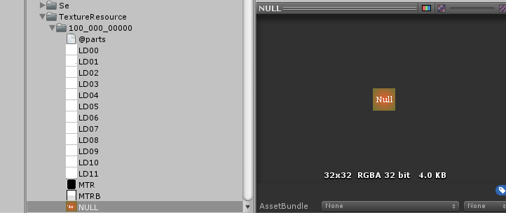

テクスチャパーツデフォルト値¶
| コントロールの種類 | デフォルト値 |
|---|---|
| EDITBOX | 0:”TXFD?”(TXFD0,TXFD1) 1:”CURSR” |
| TEXTBOX | “TXFD” |
| BUTTON | “BTN0?”(BTN00,BTN01) |
| RADIO | “BTN0?”(BTN00,BTN01) |
| CHECKBOX | “BTN0?”(BTN00,BTN01) |
| TEXTURE | “” |
| LINE | “LINE” |
| ICON | “ICON” |
| RECASTICON | “ICON” |
| METER | 0:”MTR” 1:”MTRB” |
| SCROLLBAR | “SCBRH” |
| FRAME | “FRAME” |
| LABEL | “LABEL” |
| BAR | “BAR” |
“NULL”パーツ:テクスチャパーツが見つからないとき¶
設定したテクスチャパーツがテクスチャリソース内に存在しないとき、 ウィンドウシステムは、代替テクスチャとして”NULL”というテクスチャパーツを探し、割り当てます。
もし、”NULL”というテクスチャパーツが存在しないときは、レンダリングはキャンセルされます。 予め”NULL”というテクスチャをリソース内に入れておくことによって、テクスチャパーツの入れ忘れを視覚的に確認することができます。
